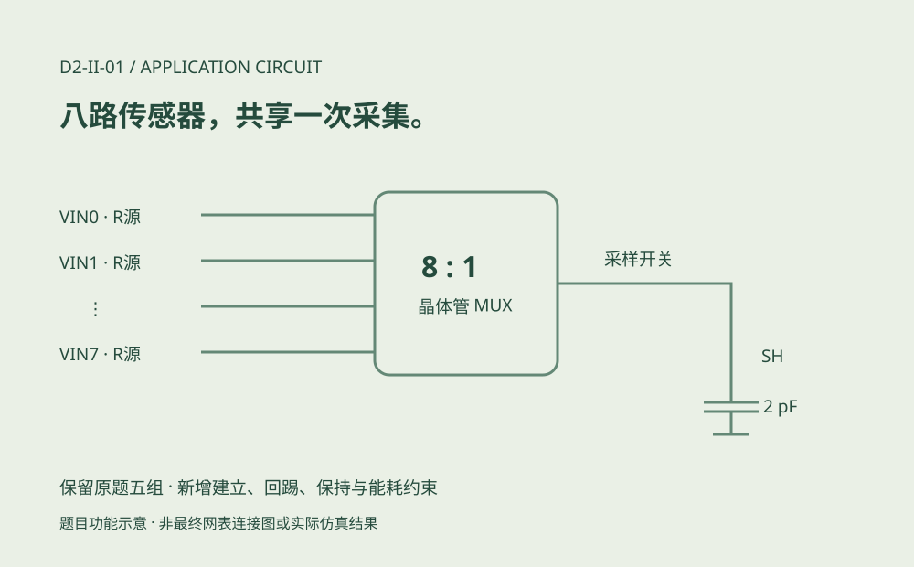

多传感器采集 MUX
保留晶体管级 8:1 MUX 的全部原题要求，再验收有限源阻抗、采样保持、通道切换与传感器完整性。
FullPass = false · 同一冻结网表
100 × min(5/5, 3/5)
15 原题 + 40 瞬态，640 次采样
小信号合格后，还要采对传感器。
从 Analog Design Bench 的 8:1 模拟 MUX 改编。保留原题增益、低频串扰、1 MHz 串扰、带宽及静态供电五组要求，再接入八路有限源阻抗传感器、2 pF 采样保持电容、预充电、二进制选择偏斜和非选通源脉冲。

模型唯一必交文件为 circuit.spi，使用原题允许的 SKY130 晶体管器件，顶层接口保持不变。同一网表接受两层验收，不能修改传感器、采样器、PDK、选择信号或检查器。无需版图、ADC 数字逻辑或自报分数。
新增矩阵为 5 个 PVT × 2 种源阻抗 × 2 种扫描顺序 × 2 种边沿时序，共 40 个公开工况。每工况计分 16 个采样槽；正反扫描配对完成 320 次历史比较。
展开受测模型收到的冻结题面
# D2-II-01：面向多传感器采集的 8:1 模拟多路复用器 版本 `d2-ii-01-multisensor-mux-eval-v0.2`，2026-11-16。 本版本用于独立电路设计评测。正式运行入口仅在研究者完整参考、负对照、数值和隔离校验通过并封存后启动。原始 v0.1 草案单独保留；本版本的原题门槛与新增工程门槛均与草案一致。 你需要设计一个 SKY130 晶体管级 8:1 模拟多路复用器，用于轮询八路电压传感器。它必须同时满足原题的完整静态/小信号要求，以及新增的有限源阻抗、大信号切换、采样电容驱动和通道间干扰要求。**同一份 circuit.spi 接受两层验收，禁止按验收模式更换设计。** ## 1. 你可以设计什么 可以在原器件政策内设计传输开关、隔离级、译码和非重叠选择逻辑；可以使用本地子电路层级。器件限原题允许的官方 SKY130 子电路，几何规则与原检查器一致。 禁止在 DUT 内使用理想 R/C/L、独立或受控源、行为器件、理想开关和 XSPICE 器件；禁止修改 PDK、外部传感器、采样器、选择信号、评测代码和测试工况。外部夹具允许的理想元件不代表 DUT 内允许使用。不要通过测量台的全局节点名或外部元件名连接未声明的接口。 原题完整英文说明见 `ORIGINAL_TASK.md`，器件写法见 `public/SKY130_NETLIST_GUIDE.md`。本题没有增加 ADC 的数字设计任务，也不要求电路版图。 ## 2. 原题的全部要求保持不变 下列五个代表性 PVT 行全部保留，不宣称覆盖完整笛卡尔角落空间： | 工艺角 | 供电 | 温度 | |---|---:|---:| | TT | 1.80 V | 40°C | | SS | 1.62 V | 125°C | | FF | 1.98 V | −10°C | | SF | 1.62 V | −10°C | | FS | 1.98 V | 125°C | 每行在共模 `0、VDD/2、VDD` 下检验八个选择码，共 15 个 PVT/共模点、120 个选通状态。各状态分别测选通输入和七个非选通输入，共 960 条独立传递函数。每条输入、选择控制及供电源均通过原 50 Ω 串联电阻驱动；输出原 1 pF 电容不变。 | 原检查组 | 保留门槛 | |---|---| | 选通路径低频增益 | 1 mHz 时 −0.001～+0.001 dB，双边含端点 | | 非选通低频串扰 | 1 mHz 时最坏增益 ≤ −80 dB | | 非选通高频串扰 | 1 MHz 时最坏增益 ≤ −80 dB | | 选通带宽 | 相对该路径低频增益的第一次下降 3 dB 交点 ≥ 5 MHz | | DC 供电电流 | ≤ 5 µA | 原题的名义点门控、完整性判断、重试规则、频率范围和测量算法原样保留。不能用下面的采样成功抵消原题失败。 ## 3. 新增应用电路 外部结构为 `理想传感器电压 → R_sensor → VINi`，每个 VINi 有 5 pF 对地电容。DUT 的 VO 保留 1 pF 对地电容，并通过固定采样开关驱动 2 pF 的 SH 节点。SH 通过另一固定开关连接预充电源，且有 1 TΩ 泄漏电阻。 - 供电与 S0/S1/S2 的串联电阻仍是 50 Ω。 - 采样开关和复位开关：Ron=50 Ω、Roff=1 TΩ、Vt=0.5VDD、Vh=0.01 V。采样控制和复位控制使用 VDD 电平，2 ns 边沿。 - 预充电源串联 50 Ω；预充电值由下表给定。 - 采样时钟与 SH 之间固定 1 fF 耦合电容。它仅表示线性时钟馈通，不是完整 MOS 沟道电荷注入模型。 - 采样器由评测器提供，模型不能修改；既不评 ADC 量化，也不把该夹具的结果称为完整采样噪声/kT/C 验证。 下表按通道 0→7 排列。八路源不再共享同一个共模，这是新增应用与原题的重要区别。 | 配置 | 传感器静态电压/VDD | 源电阻/kΩ | SH 预充电/VDD | |---|---|---|---:| | mixed_impedance | 0.08, 0.92, 0.20, 0.80, 0.35, 0.65, 0.45, 0.55 | 1, 2.2, 4.7, 1, 2.2, 4.7, 1, 4.7 | 0.1 | | high_impedance | 0.92, 0.08, 0.80, 0.20, 0.65, 0.35, 0.55, 0.45 | 4.7, 10, 6.8, 10, 4.7, 6.8, 10, 4.7 | 0.9 | 扫描顺序分别为 `0,1,2,3,4,5,6,7` 和 `7,6,5,4,3,2,1,0`，每种顺序重复三轮。选择码使用普通二进制，S2 为最高位。S0/S1/S2 的边沿均为 4 ns；两种边沿配置分别是同时开始，以及相对槽起点偏移 `0/2/4 ns`。对未翻转的位不产生额外边沿。 上述 **5 个 PVT × 2 个传感器配置 × 2 个扫描顺序 × 2 个边沿配置 = 40 个瞬态工况**。全部工况 ID 位于 `public/scenarios.json`；没有未公开新增模式或秘密范围。 ## 4. 一次采集的精确时序 先运行 2 µs 预热，选择码保持该扫描顺序的第一个通道；采样和复位开关关闭。普通 DC 工作点启动，不使用 UIC 或强制输出初值。之后共 24 个采集槽，每槽 1 µs。第一轮 8 槽只用于预热历史，评分取后两轮 16 槽；每条瞬态总长 26 µs。 以下时间均相对槽起点，表中的开关上升/下降为**边沿开始**，开关实际翻转按上述 Vt/Vh 决定： | 时间 | 固定事件或测量 | |---|---| | 0 ns 起 | 选择码切换，位偏斜按对应配置 | | 5 ns 上升、40 ns 下降 | SH 复位至规定预充电源 | | 80 ns 上升、680 ns 下降 | 采样开关接通、随后断开，名义获取时间 600 ns | | 600～670 ns | VO 与 SH 的建立误差窗口 | | 650～670 ns | 非选通传感器端的恢复误差窗口 | | 700～950 ns | SH 保持误差窗口 | | 710 ns | 一次最终采样读数 | | 760 ns 上升、810 ns 下降 | 七路非选通源同时脉冲到 `(1−静态比例)×VDD`，所选通道源保持不变 | | 775～810 ns | 检查上述主动干扰下 VO 的绝对误差 | 传感器受扰检查使用 0～700 ns 窗口，早于人为施加的源脉冲，避免把规定的外部输入变化误判为 DUT 回踢。故意脉冲的上升和下降边沿各为 2 ns；其它源电压时间保持静态基准值。 ## 5. 新增工程目标 所有量以独立波形测量，适用于全部相关工况和评分槽；不能对失败角落取平均。误差的参考值是当前所选通道的理想传感器源基准电压。 | 组 | 测量与门槛 | |---|---| | G1 读数与保持精度 | 710 ns 的 `abs(VSH−目标)` ≤ 2 mV；700～950 ns 最大保持绝对误差 ≤ 2.5 mV | | G2 建立与历史依赖 | 600～670 ns 内 VO 和 SH 的最大绝对误差均 ≤ 1 mV；正/反扫描的同一通道、同一重复轮次的 SH 读数差 ≤ 0.5 mV | | G3 传感器完整性 | 每个非选通 VINi 相对其实际源电压的最大偏移：0～700 ns ≤ 25 mV；650～670 ns ≤ 0.5 mV | | G4 非选通干扰抑制 | 七路源主动扰动期间，775～810 ns 的 VO 最大绝对误差 ≤ 3 mV | | G5 能量与供电峰值 | 后两轮的所有固定独立源正向输送平均功率之和 ≤ 150 µW；同窗口 AVDD 源电流的绝对峰值 ≤ 5 mA | G2 共 20 对正反扫描，每对比较两轮×八通道，合计 320 次历史比较。G1 等瞬态组共 640 个最终采样读数；各组依赖的完整性要求都必须成立。 G5 包括 15 个源：AVDD、3 个选择控制、8 个传感器、预充电、采样控制和复位控制。对每个源分别积分 `max(−V源×I源, 0)`，再相加除以评分时长 16 µs；SPICE 源电流采用流入正端为正的定义。回送能量不抵消消耗，另保存每个源的有符号能量。固定夹具的充放电也计入相同口径，不能只报告 DUT 的 AVDD 电流。 这些是新增目标，**不修改原题 5 µA 静态电流及其原有口径**。完整合同的权威数值在 `contract.json`，原题权威行为在字节保留的上游文件。若二者发现冲突，需修正文档/配置并升版本，不能在模型测试中临时解释。 ## 6. 模型交付与公开检查 唯一必交文件是 `circuit.spi`。最终交付目录形如： ```text /app/ circuit.spi 必需，非空 UTF-8/ASCII，最多 1 MiB DESIGN.md 可选；内容和章节不计分 ``` 网表必须包含且仅包含一个同名顶层声明，端口顺序和转义如下。以包内 starter 的这一行为最直接的拷贝来源，不要自行改写总线名称： ```spice .subckt input_mux_8to1 AVDD AVSS S\<2\> S\<1\> S\<0\> VIN\<7\> VIN\<6\> VIN\<5\> VIN\<4\> VIN\<3\> VIN\<2\> VIN\<1\> VIN\<0\> VO * 你设计的合法晶体管级电路 .ends input_mux_8to1 ``` 不需要 JSON 参数清单，不需要模型自报分数，不规定 DESIGN.md 的标题级别。starter 的空实现是接口示例，预检查会明确指出尚未实现；它不是参考解。 在准备好的容器中运行： ```sh python3 /app/tools/check_submission.py --submission /app ``` 该命令先检查交付和端口，再调用镜像内的原生 SKY130 合法性检查器；**通过它不代表电气合格**。本地无 PDK 时可用 `--structural-only` 检查文件/接口，此时输出明确标记 native legality 未运行，不能作为正式资格证据。 单工况公开诊断例： ```sh python3 /app/tools/run_added.py --submission /app \ --case tt_1p80_40__mixed_impedance__ascending__aligned \ --out /app/experiments/mux-diag-001 ``` 输出目录必须是新目录，以免旧波形混入。全矩阵使用 `--all` 替代 `--case`，会启动 40 次原生 ngspice；一次工具调用不是一次求解。所有原生求解通过统一预算网关逐进程计数。完整矩阵可能超过单次 terminal 的 180 s 限制；可在后台运行并重定向日志，随后查询。原生单进程超时为 360 s。 ## 7. 评分与失败解释 原题五组、新增五组分别报告。满足交付、合法性和完整测量时，评分公式为： `100 × min(原题通过组数/5, 新增通过组数/5)`。 满分必须同一份最终网表两层全部通过。任一组要求其全部声明工况通过，不能靠其它组补偿。评分器只使用可信验收端的数据；模型提交 measurements.json 或自行修改波形没有效力。 基础设施错误记无效/空值，不记工程失败。候选相关数值失败需先归因，相关组可按事先冻结规则记未证实/不得分，不得写成已经测得物理超限。原题自身的 blocked 语义保留并明确展示。公开诊断只给出开发反馈；正式分数来自冻结后独立重跑。 最终独立验收从截止时磁盘上的 circuit.spi 冻结副本重新求解。评测器不修网表，不从历史中挑最佳设计；可选说明文档不提供工程分数。 ## 8. 正式预算 仅测试一次精确模型 `gpt-6.1-sol`，推理强度 `medium`。开发上限为 7200 s（含 API 等待）、48 次模型回复、120 次工具、160 次实际原生 ngspice 进程、累计 131072 输出 token（含提供方报告的推理）、单回复最多 32768 输出 token。失败及超时的原生进程同样计数，没有候选数量限制。开发容器和每个原生 worker 均为 2 CPU / 4 GiB，原生单线程，单进程超时 360 s。容器准备与启动预热在模型计时开始前完成。 原题完整成功且无重试通常需 15 个进程，新增全矩阵 40 个进程，组合一次为 55 个。原题名义点失败可能提前退出，不应误报已覆盖全矩阵。开发网关串行执行原生求解，脚本和后台作业同样计入配额。最终独立验收不占开发配额，不向模型返回结果。 最终原题验收保留上游四 worker、每个进程八个 DUT 副本的算法，使用 2 CPU / 16 GiB；新增验收在 2 CPU 内运行两个进程。研究者校准、模型开发、最终独立验收分别记账。旧草案的 180 s 单进程超时在实际校准中不足，故在正式推理前统一确定为 360 s；工程指标、时间/回复/工具/token/进程总量不变。完整协议见 `/app/AGENT_PROTOCOL.md`，机器可读预算见 `/app/budget.json`。
失败在建立窗口和传感器回踢。
原题五组全部通过：选通低频增益 −0.000894693～+0.000173716 dB；最坏低频与 1 MHz 串扰分别为 −150.103、−149.702 dB；最低带宽 74.4675 MHz；最大静态供电 3.47403 µA。
| 新增组 | 最坏测量 / 门槛 | 结果 |
|---|---|---|
| G1 采样与保持 | 1.399086 / 2 mV；1.399251 / 2.5 mV | 通过 |
| G2 建立与历史 | 建立 1.261749 / 1 mV；历史差 0.018129 / 0.5 mV | 未通过 |
| G3 传感器完整性 | 峰值扰动 104.031946 / 25 mV；恢复 0.072051 / 0.5 mV | 未通过 |
| G4 非选通干扰 | 输出误差 0.593161 / 3 mV | 通过 |
| G5 能耗与峰值 | 正向源总功率 60.293971 / 150 µW；AVDD 峰值 1.875032 / 5 mA | 通过 |
逐工况查看独立测量
40 个工况全部完成。橙色表示该工况至少一项应用指标超限；历史配对的 320 项检查均通过。点选方格查看原始测量链接，序号仅用于网页定位。
正在读取逐工况数据；也可直接下载下方全部原始测量 JSON。
最终评分与难度认证分别记录。
推理前冻结公式为 100 × min(原题通过组数/5, 新增通过组数/5)；每组要求其全部工况与指标通过。此次独立验收耗时 1079.281 秒，40/40 瞬态完整，640 次采样与 320 次历史比较。40 份 gzip 原始波形已本地解压、校验 SHA256 并由封存测量代码重算。最终网表 SHA256：
95619b1a7c26a18e6014c9e5e70342cf9b29bec1ef32cf94f78a121b2de6c238
开发预算：7200 秒、48 次回复、120 次工具、160 次实际原生求解、131072 累计输出 token；2 CPU / 4 GiB，medium。实际记录为 47 次回复、47 次工具、157 次原生求解、11 个合法版本，输出 14683 token，最后 finish 记录 6146.909 秒。最终独立验收使用 2 CPU / 16 GiB，求解另计，本次追加模型调用为 0。
开发扫描 full001 实际混用 4 个版本，却标为初版哈希。重新验收修复了最终评分的混版问题，无法消除旧反馈对搜索的影响；后续须在修复后的新 runtime 中另做公平测试。页面保留当前“认证暂缓”状态。
求解完成后 Docker 控制面再次超时，退出码与合并 stdout 未收集，自有容器清理待 daemon 响应。全部 55 次原生日志、测量和末尾哈希断言后的 execution.json 已保留；这项控制面限制单独披露。
从冻结网表，追到每一项测量。
网页提供轻量证据包，含原生夹具、日志、测量和封存代码，省略约 525 MB 完整包中的大型波形与全部开发轨迹；完整本地包指纹见公开范围说明。旧扫描工具带已披露缺陷，仅作审计留存。
上游任务：Analog Design Bench / sky130-analog-input-mux-8to1-pvt，作者 Ying Haochi，固定提交 972f7cd7c95381134387b250edf18f3bd23bdd25。软件 Apache-2.0，题目内容 CC BY-NC 4.0；来源及改编记录随包保留。
展示接入于 2026-11-16。此页面使用既有冻结产物；网页制作没有追加模型或原生仿真调用。各题分数不合并排名。